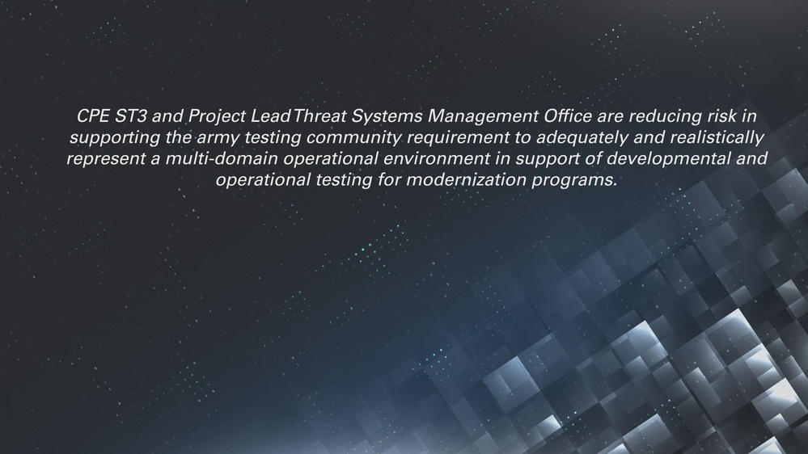

We hire engineers who want their hardware fielded — not demoed. Every discipline below ends at the basin, under live spectrum, with real operators trying to break what you built.

Aranruth engineers own systems end-to-end: architecture, implementation, bench validation, Volume validation, and the field serial where a border unit or air-defense cell operates your system for the first time. There is no layer between you and the acceptance test. If your classifier drops a track at week three of certification, you are on the range fixing it — that is the job, and it is the point.
Machine-vision models for visible + SWIR sensor fusion on constrained edge hardware. Gait and kinematic-signature tracking. Model quantization, real-time inference pipelines, and track-integrity metrics that survive dust, glare, and degraded optics. Python / C++ / CUDA. You own the ARGUS perception stack from training data to acceptance.
DRFM signal chains, real-time FFT on specialized FPGAs, and software-defined spectrum control. Verilog/VHDL, high-speed ADC front-ends, RF PCB layout, and timing analysis inside the latency budget — not after it. You own WRAITH's response model when the spectrum turns hostile.
Passive array beamforming, Rotor Blade Passing Frequency isolation under battlefield noise, and hardened neural classifiers trained on contested-range recordings. DSP, adaptive filtering, and the mathematics of detecting things that emit nothing but sound. You own BANSHEE's receive-only advantage.
The basin itself is a system: 6-antenna spectrum arrays on fiber backhaul, anechoic chamber instrumentation, LoS tower pairs, GPS + magnetometer arrays, and the data pipeline that turns every live-fire serial into a validation record. Sensor fusion, time-sync, and measurement science at 4,020 hectares.
Bare-metal and RTOS firmware for fielded nodes: power management, secure boot, over-the-air update under degraded links, and failure behavior when the network is gone. C, Rust, and a healthy disrespect for abstractions that haven't been shot at.
The 0300 escalation line. You deploy with the system, train the operators who inherit it, and feed the failure report straight into next week's build review. Prior service strongly preferred — see the veteran pipeline.
Adversarial review weekly. The challenging directorate is assigned, not volunteered. Bench to basin in weeks, not fiscal years. If a gate fails, the program stops — there is no override that skips the proving ground.
Clearances are handled through the Security & Assurance directorate: personnel reliability program enrollment for program-facing roles, export-control training for everyone, and a strict boundary between open-channel and classified-adjacent work. Candidates go through the same review gates as hardware.
Submit through careers@aranruth.com. No cover-letter theater. Tell us what you have built that survived contact — hardware, software, or both — and where it is running today. Prior-service candidates: state your MOS/rate and operational experience; the veteran-careers pipeline maps it directly.
Applications are reviewed by the owning directorate. Expect a technical conversation, a bench problem, and — if it fits — a trip to the basin. Relocation to the Mapimí operating region is required for range-facing roles; remote is possible for pure-modeling disciplines.